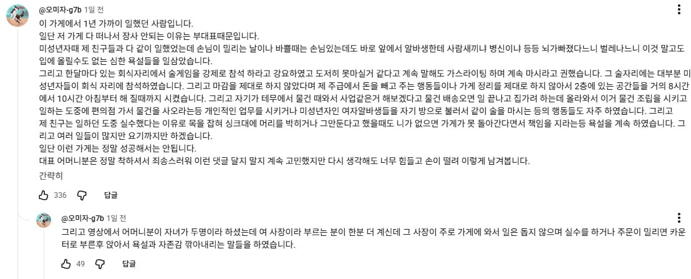
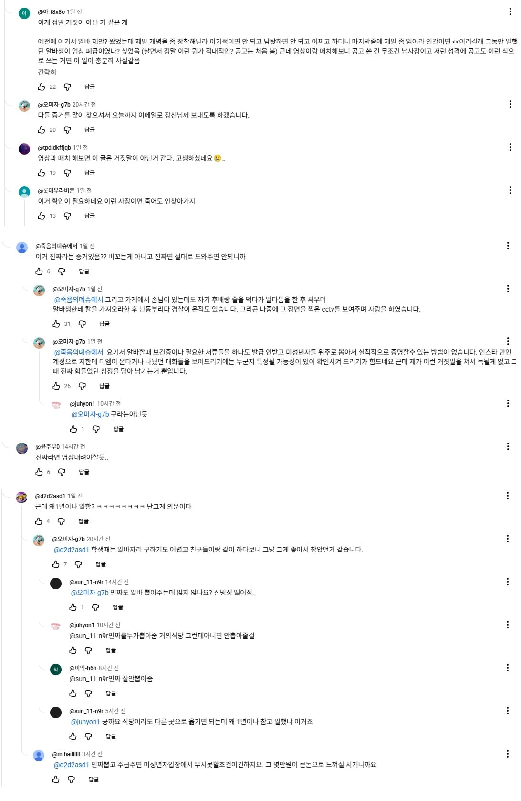
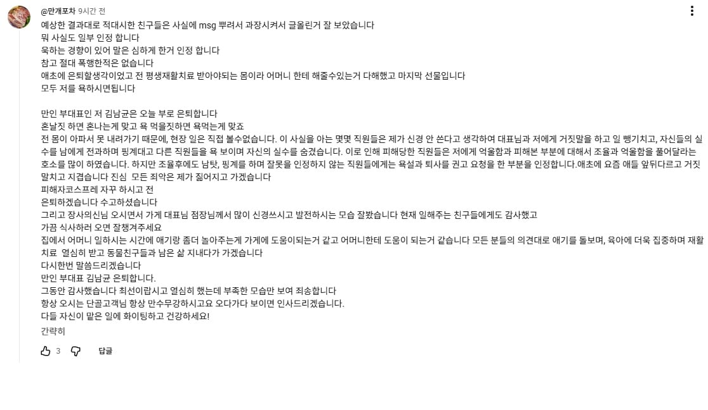
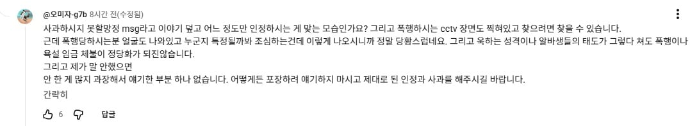

https://youtu.be/YjsJLZNmKrA?si=HtqG0WtMlaYgAqNy
장사의신에서 골목식당 영상 올라왔는데
나이 40에 오타쿠 겜돌이 덕후와 60대인 어머니가 같이 일하는 고깃집인데
남자는 사고로 인해 영구장애 입고 오래 살기 힘들다고 하며 서빙도 힘든 상황
그리고 영상 올라온뒤 폭로댓글이 달렸는데

여기서 말하는 부대표가 저 오타쿠 남자

영상 댓글반응은 안좋음

그러자 해명댓글
msg에 과장이 섞여있고 자신은 폭행한적이 없으며 자신은 부대표 자리를 은퇴하겠다는 말

이에 폭행 욕설 임금 체불이 정당화되지 않는다고 반박댓글 다시 달림
자칫하면 영상 지워질지도...
어머니는 상당히 좋으신 분인데...
ㅋㅋㅋㅋ